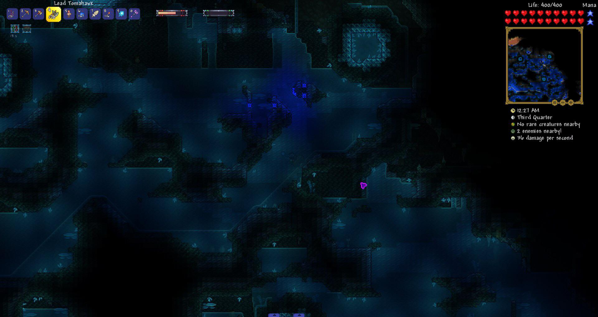
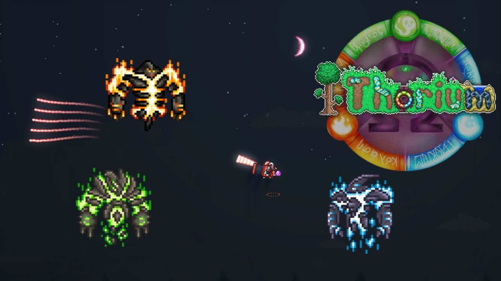

Popular Modded Content
If players get tired of the vanilla content, mods add lots of new content to Terraira and make the game more exciting. They can download mods from various sources and install them using the tModLoader app. In the workshop, there are thousands of mods to choose from, which can range from small quality of life changes to complete overhauls of the game. Calamity and Thorium are two of the most popular mods to drastically overhaul the progression and difficulty of the game. The Calamity Mod adds new bosses, biomes, items, and mechanics to the game, while the Thorium Mod adds 3 new classes to choose from and abilities for players to try out. Both mods are praised by many as great choices for players who want to experience something new in Terraria. Some other honorable mentions include:

Pros and Cons of Modding
While modding can be a great way to enhance the Terraria experience, it can also have some drawbacks. For example, mods can sometimes be incompatible with each other, which can cause issues with world generation or interations in game. Some mods can be buggy and cause crashes or other issues with the game. Additionally, some mods can be unbalanced and make the game too easy, which can take away from the challenge and satisfaction of playing the game. However, for players who are looking for a new experience or want to try something different, modding can be a great way to do so. Overall, modding is a great way to enhance the Terraria experience and add new content to the game. Players should always be cautious when downloading and installing mods, but with the right mods, they can have a great time exploring new content and challenges in Terraria.